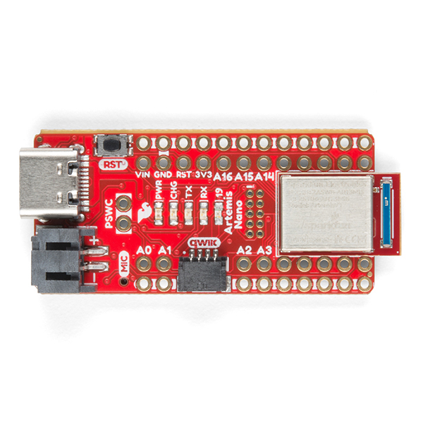

Hello! I am a senior in ECE at Cornell interested in firmware and embedded systems. This website will contain updates and overviews of all of the labs for ECE 4160.
This first lab served to help become familiar with the Artemis board and uploading Arduino programs to it. After setting up the Arduino IDE on a lab computer, I ran 4 pre-written example programs on the board.
The simplest program to run on any board is blinking an LED. Similar to outputting "Hello World," this program ensures that the system is set up properly.
This next example tests the serial communication feature of the board. Upon running this program, a series of print statements appear in the Serial Monitor.
Now testing the onboard testing sensor. Notice how in the beginning of the video, the temperature values are in the 32,200 count range. After I press my thumb onto the board, heating it up, the temperature increases to the 32,600 count range. After I release my thumb, the temperature drops back down to 32,200 counts.
The final example tests the microphone capabilities of the board. The Serial Monitor prints out the frequency the microphone detects, and when I whistle into the microphone, the frequency skyrockets to the 2000 Hz range.